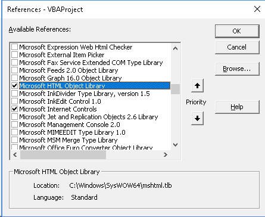

|
VBAMakro |
Diğer Uygulamalarla iletişim |
5 |
Webden veri çekme
Web'den farklı formatlarda veri çekilebilmektedir. pdf, imaj gibi yapısal olmayan dosyaları ahariç bırakırsak hedefimizde 3 tür dosya tipi olabilir.
- html: Özellikle "table" tarzındaki elementleri parse ederek hedefe ulaşırız. Bunun için HTML DOM bilgisi gereklidir.
- xml: Burda da XML DOM'a aşina olmak gerekli. Ayrıca XPath ve XQuery kavramlarını da bilmekte fayda var.
- json: Bu, VBA'in dictionarysine benzer. Bunun için hazır modülleri kullanacağız.
Yöntemlere baktığımızda ise 3 ana kütüphane ile hedefe ulaşabiliriz. Bunlar;
- Internet Explorer ile html parsing yapılabilir
- XmlHttpRequest nesnesi ile html veya xml parsing yapılabilir, webservis de çağırabiliriz
- SOAP nesnesi ile webservisleri çağırabiliriz
Bunların dışında 3rd party kütüphaneler(Ör:Selenium, VBA WEB tools) de var ama biz bunlara girmeyeceğiz. Ayrıca Excel'in yerleşik QueryTable nesnesi ile de web sorgulamaları yapılabilmekte ama bunla da kafanızı karıştırmak istemiyorum, kendim de çok kullandığımı söyleyemem.
Hedef her ne olursa olsun, dönen sonuç üzerinde çeşitli işlemler yapmamız gerekecek. Bazen tek bir yöntem yeterliyken bazen burda göreceğimiz yöntemleri birleştirerek kullanmak gerekebilecektir.
HTML elemanlarını parse etmek
ÖNEMLİ NOT: Aşağıdaki örnekteki kod geçerliliğini
yitirmiştir. Zira ilgili sayfanın tasarımcısı HTML kodlarını değiştirmiş olabilir. Yeni
örnek dosyayı buradan indirebilirsiniz, ancak aşağıda hala ilk haline göre olan
açıklamaları bulacaksınız. Bahsekonu sitede sürekli bir güncelleme hali
olabileceği için aynısını her defasında kendi siteme yansıtamıyacağım. Ancak
kodların çalışmaması durumunda iletişim
sayfamdan bana bilgi verirseniz sadece örnek dosyayı güncelleyip siteye
ekleyebilirim.
EDİT(16.02.2020):Bu tür güncelleme süreciyle uğraşmamak için 2.örnek olarak kendi web sitemden bir örnek ekledim. buradaki kod her zaman çalışır olacaktır.
Buradan örnek
uygulamayı indirebilirsiniz.
Hemen belirtmek isterim ki, bu yöntemi uygulamak için biraz da olsa Html, Html DOM(Document Object Model) ve Javascript(bazen
de css) bilgisi gereklidirBunlara aşina değilseniz
uygun bir tutorial sitesinden(w3school olabilir) temelleri almanızda
fayda var.
Web'den tüm bir sayfa içeriğini VBA ile alabilmeniz mümkün olsa da
biz bu sitede daha çok verilerle ilgilendiğimiz için veri okumayla ilgili kısma
yoğunlaşacağız. Verilerin bulunduğu HTML elemanları da büyük çoğunlukla
table elemanları içinde bulunmaktadır.
Lafı uzatmadan hemen örneğimize geçelim. Diyelim ki aşağıdaki sitede(https://kur.doviz.com/)
bulunan döviz tablosunu Excel içine almak istiyoruz.
Şimdi bu noktada ilk yapmamız gereken tabloda bir yere gelip sağ
tıklamak ve "İncele" demek olacaktır.
Bunu yaptığımızda browser penceremizde bir bölme açılır ve seçtiğimiz
kısma konumlanarak onun elemanlarını bize gösterir.
Bu kısmı biraz kurcalarsak thead ve tbody kısımlarını görürüz. thead
kısmında ilgili listenin başlıkları yazmakta. tbody kısmında ise veriler
bulunmakta.(Daha geniş bir görüntüyü, sağ tıkladıktan sonra İncele yerine
Sayfa kaynağını görüntüle seçeneği ile görebilirsiniz)
Gördüğünüz üzere, bizim hedef kitlemiz "hisse-tablo" class'ına sahip
olan "tr" tag'leri. Yanız thead içinde de hisse-tablo var bi tane(her ne
kadar tam class adı "hisse-tablo hisse-tablo-row1" görünse de).
Dolayısıyla biz ilk "hisse-tablo" class'lı elemanı değil
sonrasındakilere bakmalıyız.
Şimdi üstteki resimlerden belli olmadığı için tüm sayfa kaynağından
bakacak olursak, bu tr tag'inin açılmış halini daha açıkça görebiiriz.
Bunların içinde aşağıdaki gibi td taglerini görüyoruz. Bizim ihtiyacmız
olan bunlardan döviz adı, alış ve satış fiyatları; yani sırayla 1, 4, ve
5. elemanlar. Javascriptte indexler 0'dan başladığı için 0, 3 ve 4.
elemanlar. Bu td elemanları tr elemanlarının bir alt seviyesi olduğu için
bunlara tr'nin çocukları denir, yani children
özelliği ile bunlara ulaşılabilir.
Şimdi kod yazımı için hazırlığımızı yapalım.
Kurgumuz aşağıdaki gibi olacak. B1 hücresinden döviz kurlarının
kaynağını seçeceğiz.(Serbest piyasa mı yoksa başka bir kurumun fiyat
bilgileri mi diye). Buna göre dönen sonuç A5-C5 range'inden aşağıya doğru
gelecek. Yani bir worksheet_change event'i sözkonusu.
İlk olarak bir dictionary'ye ihtiyacımız olacak. Bunu B1'den seçilen değerin karşılığı
olarak Url'ye bir ek yapmak için kullanacağız. Örneğin B1'de kaynak olarak
"Serbest Piyasa" seçilirse url eki Serbest-Piyasa oluyor. Bunun için
global geçerli olması gereken bir dict değişkenini Module1 içinde tanımladım. Buna hem
workbook_open eventinden hem de worksheet_change eventi içinde erişeceğiz.
Workbook_open içinden dictionary'yi dolduruyoruz ve B1 hücresine data
validation yapıyoruz.
'Module1 içeriği
Public dict As New Scripting.Dictionary
'ThisWorkbook içeriği
Private Sub Workbook_Open()
dict.Add "Serbest Piyasa", "Serbest-Piyasa"
dict.Add "Akbank", "Akbank"
dict.Add "Denizbank", "Denizbank"
dict.Add "Merkez Bankası", "Merkez-Bankasi"
For Each k In dict.Keys
liste = liste & "," & k
Next k
With Range("b1").Validation
.Delete
.Add Type:=xlValidateList, AlertStyle:=xlValidAlertStop, Operator:= _
xlBetween, Formula1:=Mid(liste, 2, Len(liste) - 1)
.IgnoreBlank = True
.InCellDropdown = True
.InputTitle = ""
.ErrorTitle = ""
.InputMessage = ""
.ErrorMessage = ""
.ShowInput = True
.ShowError = True
End With
End Sub
Kodun bundan sonraki kısmı iki ayrı yöntemle yapılabilir. İlk olarak Internet Explorer yöntemini kullanıcaz, sonra da HTTP
yöntemini.
IE ile kod yazımı
Bunun için Internet Explorer'ın(IE) bir örneğini yaratıcaz,
bunu gerçekten açmıyoruz tabi, sadece bellekte açıyoruz. O yüzden IE'nin nesne modeline ihtiyacımız var.
(Bu yöntem için PC'nizde IE olması gerektiği aşikar.)
Ayrıca HTML elemanları ile çalışacağımız için HTML nesne modeline de
ihtiyacımız bulunuyor.
Bunları eklemek için Tools>Reference üzerinden
aşağıdaki libraryler eklenir:

Worksheet_change eventinin kodu da aşağıdaki gibi olacaktır. Kod
içinde gerekli tüm açıklamalar bulunmakta.
Private Sub Worksheet_Change(ByVal Target As Range)
Dim IE As InternetExplorer
Dim elements As IHTMLElementCollection 'birçok tr tagini tutacak olan html collectionımız
Dim url As String
Dim url_ek As String
Dim r As Integer
On Error GoTo hata
If Not Target.Address = "$B$1" Then Exit Sub 'sadece B1'e tıklanırsa ektif olsun
Application.EnableEvents = False 'data çekilirken recursive şekilde tetiklenme olmasın diye eventleri geçici olarak pasifleştiriyoruz
Application.StatusBar = "Lütfen bekleyiniz..."
url_ek = dict([B1].Value)
[b2].ClearContents
başlangıç = Timer 'süre ölçmek istersek diye koydum
'önce eski veriyi temizleyelim
Range("Table1").Select
Selection.ClearContents
Set IE = New InternetExplorer
IE.Visible = False
url = "https://kur.doviz.com/" & url_ek
IE.navigate url 'ilgili sayfayı bellekte açıyoruz
'Bu kısım önemli, IE'yi bellekte açar açmaz sayfa yüklemesi hemen olmaz
Do While IE.Busy Or IE.READYSTATE <> 4 'sayfa yüklememsi tamamlanana kadar bekliyoruz
DoEvents
Loop
Application.StatusBar = "Veri Çekiliyor..." 'veri çekilmeye başlandığında statusbarı güncelliyoruz
Set elements = IE.document.getElementsByClassName("hisse-tablo") 'classı "hisse-tablo" olan tüm elemanları elements değişkenine atıyoruz
'Application.Wait (Now + TimeValue("00:00:05")) 'eğer eksik veri geliyorsa tam olarak belleğe alamıyordur, bunun için gereken süre kadar bekleriz, burayı duruma göre sizin ayarlamanız gerekecek
r = 5 'başlangıç satırı
For i = 1 To elements.Length - 1 '0'dan değil 1den başlıyoruz, çünkü başlığın olduğu kısmı atlıyoruz
If elements(i).ID = "linkUnit" Then GoTo atla 'RUS rublesindeki sonraki çizgiyi atlıyoruz
Cells(r, 1).Value = elements(i).Children(0).innerText 'döviz adı, 0 indeksli yani 1. eleman
'Küsuratlarda problem çıkmaması için virgülleri nokta ile replace ediyoruz
Cells(r, 2).Value = Replace(elements(i).Children(3).innerText, ",", ".") 'alış fiyatı 3 indeksi yani 4.eleman
Cells(r, 3).Value = Replace(elements(i).Children(4).innerText, ",", ".") 'Satış fiyatı 4 indeksi yani 5.eleman
r = r + 1
atla:
Next i
bitiş = Timer
Debug.Print bitiş - başlangıç 'geçen süreyi yazdırıyoruz
IE.Quit 'ilgili sayfada reklam v.s varsa arka planada müzik çalmaya devam eder, bu satırla arka planda açık olan Internet Exlporer'dan çıkarız ve reklam müziği sona erer
Set IE = Nothing: Set htmldoc = Nothing: Set elements = Nothing 'ilgili objeleri bellekten atıyoruz
Range("Table1[[Alış]:[Satış]]").Select
Selection.NumberFormat = "0.00"
[lastruntime].Value = Now 'güncelleme zamanını yazıyoruz
[lastruntime].Select
Application.StatusBar = "İşlem tamam"
Application.EnableEvents = True 'Enableevent özelliğini tekrar aktive ediyoruz
Exit Sub
hata:
Set IE = Nothing: Set htmldoc = Nothing: Set elements = Nothing
Application.StatusBar = ""
MsgBox "Bi hata oluştu" + Err.Description
Application.EnableEvents = True
End Sub
For Next döngüsünü aşağıdaki gibi de yapabilirdik, ancak bu sefer ilk If
kontrolünü tüm döngü boyunca yapmak durumunda kalırdık, ki bu da
performansı yoran bir işlem olurdu, o yüzden yukarıdaki yöntem daha
hızlıdır. Ama bu tür kontrollerin gerekmediği durumlarda For Each
döngüleri daha pratik olmaktadır.
'En başta da şu tanım yapılmalıdır
Dim element As IHTMLElement
For Each element In elements
If element.className = "hisse-tablo hisse-tablo-row1" Then GoTo atla 'başlığın olduğu kısmı atlıyoruz
If element.ID = "linkUnit" Then GoTo atla 'RUS rublesindeki sonraki çizgiyi atlıyoruz
Cells(r, 1).Value = element.Children(0).innerText 'döviz adı, 0 indeksli yani 1. eleman
Cells(r, 2).Value = Replace(element.Children(3).innerText, ",", ".") 'alış fiyatı 3 indeksi yani 4.eleman
Cells(r, 3).Value = Replace(element.Children(4).innerText, ",", ".") 'Satış fiyatı 4 indeksi yani 5.eleman
r = r + 1
atla:
Next element
Gördüğünüz üzere, html elemanlarını parse ederken çeşitli metodlar ve
özellikler kullanırız. Bunlar özetle aşağıdaki gibi olup özellikle
bunları araştırmanız ve öğrenmenizi tavsiye ederim.
- getElementsByTagName: Çok
elemandan oluşan bir IHTMLElementCollection collection'ı
döndürür
-
getElementsByClassName: Çok
elemandan oluşan bir IHTMLElementCollection collection'ı
döndürür
-
getElementById: Tek bir
IHTMLElement elemanı döndürür
-
innerText: İlgili elemanın
içindeki metini verir.
-
innerHTML: İlgili elemanın tüm
HTML metnini verir.
-
textContent: İlgili elemanın
içindeki <span> v.s elemanları kapsayacak şekilde metnini verir.
NOT:Unutmayın ki, web siteleri zamanla değişebilir.
Bu nedenle kodunuzda
zaman zaman güncelleme yapmanız gerekebilir.
NOT: Yukarıda IE.document.getElementsByClassName diyerek arada olşuan HTMLDocument tipli nesnesyi bypass ediyoruz. eğer html dokümanını kendisiyle işlem yapacaksak, mesela body'sini okumak gibi, bunu bypass etmeden bi değişkne atayabiliriz. Örneğin.
Dim htmldoc As MSHTML.HTMLDocument
......
Set htmldoc = IE.document
bodystr=htmldoc.body.innerText
2.Örnek
Şimdi ise, konuyu pekiştirmek adına ve değişme ihtimali çok düşük bir sayfadan veri çekeceğiz. Değişme ihtimalinin çok düşük olması sayfanın benim web sitemdeki bir sayfa olmasından. Olur da bir değişiklik yaparsam bu çok büyük ihtimalle “class” isminde olacaktır.
Hemen örneğimize geçelim.
Veri çekeceğimiz tablo ve html görüntüsü aşağıdaki gibidir.
Buna göre kodlarımız şöyle olacaktır. Tüm açıklamaları kod içinde bulabilirsiniz.
Sub webdenveri()
Dim IE As InternetExplorer
Dim tablolar As IHTMLElementCollection 'tablolarımızın ID'si yok, classı var, class olması demek 1den çok tablo olabilir demek,
'bu sayfamızda 1 tablo var gerçi, ama biz yine de bu şekilde ilerlemek durumundayız
Dim tbody As IHTMLElement 'tablodaki tbody elementini tutacak
Dim r As Integer
On Error GoTo hata
Set IE = New InternetExplorer
IE.Visible = False
url = "https://www.excelinefendisi.com/Konular/Excel/Giris_PratikKisayollar.aspx"
IE.navigate url 'ilgili sayfayı bellekte açıyoruz
'Bu kısım önemli, IE'yi bellekte açar açmaz sayfa yüklemesi hemen olmaz
Do While IE.Busy Or IE.READYSTATE <> 4 'sayfa yüklememsi tamamlanana kadar bekliyoruz
DoEvents
Loop
Set tablolar = IE.document.getElementsByClassName("alterantelitable") 'classı "alterantelitable" olan tüm tabloları tablolar değişkenine atıyoruz, 1 tane var zaten
'Application.Wait (Now + TimeValue("00:00:05")) 'eğer eksik veri geliyorsa tam olarak belleğe alamıyordur, bunun için gereken süre kadar bekleriz, burayı duruma göre sizin ayarlamanız gerekecek
r = 1 'başlangıç satırı
Set tbody = tablolar(0).Children(0) 'ilk tablonun(her ne kadar 1 tane olsa da) ilk elementi, yani tbody
For i = 0 To tbody.Children.Length - 1 'tbody altındaki tüm child elementlar kadar, yani tr tagleri kadar, özetle tüm satırlarda döneceğiz
Cells(r, 1).Value = tbody.Children(i).Children(0).innerText 'tbodynin ilk satırının ilk child elemanı, yani ilk td'si, yani ilk kolonu(ilk satır için td değil, th ama bizim için değişen birşey yok)
Cells(r, 2).Value = tbody.Children(i).Children(1).innerText 'tbodynin ilk satırının ikinci child elemanı, yani ikinci td'si, yani ikinci kolonu
r = r + 1
Next i
IE.Quit 'ilgili sayfada reklam v.s varsa arka planada müzik çalmaya devam eder, bu satırla arka planda açık olan Internet Exlporer'dan çıkarız ve reklam müziği sona erer
Set IE = Nothing: Set tablolar = Nothing: Set tbody = Nothing 'ilgili objeleri bellekten atıyoruz
Exit Sub
hata:
Set IE = Nothing: Set tablolar = Nothing: Set tbody = Nothing
MsgBox "Bi hata oluştu, " + Err.Description
End Sub
Sonuç aşağıdaki gibi olacaktır.
Gerekli formatlama işlerini size bırakıyorum.
Http Yöntemi ile
Bu konuyu aşağıda işledim. Aslında burda yapılan da günün sonunda parsing olacak ancak ama HTTP yönteminin başka boyutları da olduğu için aşağıda bir bütün olarak almayıtercih ettim.
XMLHttpRequest nesnesinin detayları
Http
XMLHttpRequest nesnesi, VBA dahil birçok programlama dilinde http bağlantısı kurmayı sağlayan bir nesnedir. Biz burada doğal olarak VBA için hazırlanmış olan kütüphaneyi kullanacağız.
Konuya geçmeden önce HTTP hakkında genel bilginiz olması gerekiyor. Eğer bu konuda kendinizi yetersiz hissediyorsanız aşağıdaki linklerden ön bilgi alabilirsiniz.
Genel http bilgisi
daha sonra tekrar buraya gelip devam edin.
Evet, bu linklere baktıysanız görmüşsünüzdür ki; HTTP, host ile client arasındaki bir protokoldür. Biz client olarak bir host makinaya request(istek) göndeririz, ki bu istek bir URl şeklindedir; o makine de bize response(yanıt) döndürür.
Örnek bir GET isteği şöyledir: https://wwww.falancasite.com/query?singer=tarkan&yil=2012
Browserlardaki adres şubuğunua yazdığımız herşey bir GET isteğidir. POST'ta ise daha çok hassas bilgi göndererek bilgi almaya çalışırız veya bir veritabanı kayıt işlemi gerçekleştiririz. Bu iki metod arasındaki farklar için https://www.w3schools.com/tags/ref_httpmethods.asp sayfasındaki "Compare GET vs. POST" kısmına bakabilirsiniz.
Bu arada Http denemeleri yapmak için https://httpbin.org/ ve http://ptsv2.com/ sayfalarını kullanabilirsiniz.
VBA dünyası için ön bilgiler
- XMLHttpRequest adı sizi yanıltmasın, ilk başta sadece XML varken bu isim verilmiş, her tür veri alma/gönderme için bu nesne kullanılabilir.
- XMLHttpRequest ile asenkron işlem de yapılabilir ki, AJAX denen teknolojide bu nesne kullanımı kritiktir. Ancak biz buradan hep senkron çalışacağız.
- Genel syntax şöyledir: XMLHttpNesnesi.Open(strMethod, strUrl, varAsync, strUser, strPassword)
Open metodu bağlantıyı açar ama henüz bi bilgi gönderimi yoktur. Bu metodun parametrelerine bakalım:
- strMethod: GET veya POST değerini alır(başka da var ama bize bu ikisi yeterli). Hangisini seçeceğimizi bizim bilmemiz lazım, bunun için ilgili URL'e gidip F12 tuşuna basarak network sekmesinden bunu görebiliriz. İlgili URL GET mi istiyor POST mu, bu bilgi burada görünüyor. Bi parametre vermiyorsak genelde GET olacaktır.
- strUrl: Gitmek istediğimiz URL
- varAsync: Senkron çalışacağımız için hep False atayacağız
- Son iki parametreyi otantikasyon gereken işlemlerde kullanacağız
Send metodu ile de bağlantı isteğini(request) göndeririz ve daha sonra dönen bilgiyi de işleriz. Şimdi yapılacak işlere sırayla bakalım.
Kütüphane ekleme ve nesneyi kullanma
VBA'de HTTP requesti yapmamızı sağlayan iki library/reference(ve 3 sınıf) bulunmakta. Bunlar XmlHttpReuest(hem XMLHttp hem ServerXMLHttp sınıfları bunda) ve WinHTTP'dir. İkincisi, ilknin biraz daha gelişmiş versiyonudur denebilir. Hangi durumlarda hangisini kullanmak gerekir sorusuna ait bilgileri bu ve şu sayfalardan bakabilirsiniz, bununla beraber biz burada sadece basit XmlHttp sınıfını göreceğiz.
Genel olarak Http yöntemi yukarda anlattığımız IE yönteminden daha basit olabilmektedir. Özellikle, ilgili host bize web service, api veya json dosya ile bize daha yapısal bir formatla sonuç döndürüyorsa. Aralarındaki farkları aşağıda göreceğiz.
Early Binding yapmak için aşağıdaki şekilde eklenebilir.
Sonrasında ilgili nesneyi şöyle tanımlarız:
Dim req As New MSXML2.XMLHTTP60 'Sondaki 60 şu: ilgili kütüphanenin 6.0 versiyonu
req.Open "GET", requrl, False
req.Send
Late Binding için ise şöyle yazarız.
Dim xmlhttp As Object
Set xmlhttp = CreateObject("MSXML2.XMLHTTP")
Şimdi isteğimizi(request) gönderdik, bize bir cevap(response) dönecek. Eğer dönen şey metinsel bir bilgi ise (html, xml, json, text türünde bir çıktı) bunu responseText propertysi ile okuruz, dönen cevap XML dokuman ise bunu responseXml propertysi ile alırız.
Tabi öncesinde isteğimizin başarılı olup olmadığını status özelliği ile kontrol etmemizde fayda var.
Hadi şimdi örneklerimize geçelim. Bir önceki örneğin devamı olarak ilerlemiyorsanız referans olarak HTML Object Library'sini de eklemeyi unutmayalım. Ayrıca Dictionarylerden yararlanacağımız için Scripting Runtime da ekleyelim.
GET Örnekleri
Basit bir GET isteği
Sub basicget()
Dim url As String
Dim request As New MSXML2.XMLHTTP60
url = "http://www.example.com"
request.Open "GET", url, False
request.send
cevap = request.responseText
Debug.Print cevap
End Sub
Parametre Gönderme
Bu örnekte benim kendi sitemden yaptığım bir sayfaya AnaKonu ve Altkonu parametrelerini vererek bu altkonu altında kaç konu olduğunu döndüren bir sorgulama yapacağız.
Parametreleri URL'in bir parçası olarak eklemek yeterlidir. Siz de farklı bir Anakonu ve Altkonu vererek test edebilirsiniz.
Sub parametreliget()
Dim url As String
Dim request As New MSXML2.XMLHTTP60
url = "https://www.excelinefendisi.com/httpapiservice/ResponseveRequestTarget.aspx?Anakonu=VBAMakro&Altkonu=Temeller"
request.Open "GET", url, False
request.send
cevap = request.responseText
Debug.Print cevap
End Sub
Bunun sonucu aşağıdaki gibi olacaktır.
Burada istersek özellikle işaretlediğim kısmı da html parsing ile elde edebiliriz, buna ait bir örneği bir altta bulabilirsiniz.

HTML ile birleştirip Parsing yapalım
Bu örnek yukarıda IE ile yaptığımız örneğin aynısıdır.
Sub htmlandhttp()
Dim oXMLHTTP As New MSXML2.XMLHTTP60
Dim htmlObj As New HTMLDocument
With oXMLHTTP
.Open "GET", "https://www.excelinefendisi.com/Konular/Excel/Giris_PratikKisayollar.aspx", False
.Send
If .readyState = 4 And .Status = 200 Then
Set htmlObj = CreateObject("htmlFile")
htmlObj.body.innerHTML = .responseText
Set tablolar = htmlObj.getElementsByClassName("alterantelitable")
Set tbody = tablolar(0).Children(0)
For i = 0 To tbody.Children.Length - 1
Debug.Print tbody.Children(i).Children(0).innerText & " , " & tbody.Children(i).Children(1).innerText
Next i
End If
End With
End Sub
Otantikasyon
Bu sefer http://ptsv2.com sitesinden kendi oluşturduğum bir URL'i kullanacağız. Burada user ve password bilgilerini sırasıyla volki ve tolki olarak veriyorum. İsterseniz önce aşağıdaki linki browserda kendiniz deneyin.
Size bir User ve Password kutusu çıkarakcatır. Bu kodla bu kutulara da giriş yapmışız gibi oluyoruz.
Sub authanticated()
Dim req As New MSXML2.XMLHTTP60
url = "http://ptsv2.com/t/volkitolki/post"
With req
.Open "GET", url, False, "volki", "tolki"
.Send
response = .responseText
End With
Debug.Print response
End Sub
Bu kod çalıştığında "naber kanka" metni dönecektir.
Header bilgisi de belirtelim
İstek yaparken bazı bilgilerin headerda iletilmesi gerekebilir. Bunun için setRequestHeader metodu kullanılıyor. Mesela sadece belirli bir tarihten sonra oluşan taze bilgiği almak isterseniz şöyle bi header bilgis geçebilirsiniz: request.setRequestHeader "If-Modified-Since", "Sat, 24 Apr 2021 00:00:00 GMT"
Aşağıdaki örnekte hedefin content-type'ını da belirliyoruz.
Metin dışındaki bilgilerin(imaj, pdf v.s) alınması
Burda dönüş bilgisini responseText ile değil responseBody ile alıyoruz, ki bu bize byte tipinde bir dizi verir.
Sub dosyaveyaimaj()
Dim request As New MSXML2.XMLHTTP60
Dim ado As New ADODB.Stream 'raw byte olan body'yi okumak için. "open for binary" ve sonrasında "put" statement diyerek de yapılır deniyor ama ben başaramadım, ADODB ile oldu
Const dosya As String = "E:\OneDrive\Masaüstü\httpimaj.jpg" 'hedef dosyamız bu, bunun içine yazılacak
url_jpg = "https://www.excelinefendisi.com/anasayfa.jpg"
request.Open "GET", url_jpg, False
request.setRequestHeader "Content-Type", "image/jpg"
request.send
fileBytes = request.responseBody
With ado
.Open
.Type = adTypeBinary
.Write request.responseBody 'raw byte olarak gelir
.Position = 0
.SaveToFile dosya, adSaveCreateOverWrite
End With
End Sub
Json dosya
Json konusun çok detaylı bi konu olduğu için aşağıya koydum.
XML dosya
VBATools'un JSON için olduğu gibi
XML için de converter modülü var ancak şuan gelişm aşamasındaymış, gerçekten ben bizzat denedim hata aldım. Ama sorun değil, XML işleme için başka yöntemler var, zira XML Jsondan çok daha eski bi teknoloji olduğu için VBA içinde default gelen libraryler içinde XML parsing yapmaya yarayan sınıflar bulunuyor. Bu arada bu sınıfları kullanmak için biraz XML ve XML'le alakalı kavramları(özellikle Xpath) bilmeniz gerekiyor, tıpkı yukardaki HTML objelerinde olduğu gibi. Bunun için w3school'dan fadaylanabilrsiniz.
XML responseları tabiki responseText ile text olarak elde edilebilir ama responsexml ile xml objesi olarak işlemenin daha çok avantajı vardır, yapısal bi nesne olması sebebiyle. Biz de sadece buna bakacağız. Aşağıdaki kodda XML'i 3 farklı şekilde ele alacağız, o yüzden F8 ile ilerlemenizde fayda var. O sırada ele aldığımız nesnenin tam olarak ne tür bir nesne olduğunu bilmek için TypeName yazdırmanız faydalı olacaktır, ona göre en baştaki değişken deklerasyon bölümünde doğru tipli nesne yaratırsınız, bu da intellisenseten faydalanmanızı sağlayacaktır. Yani ilk başta hiç bir değişkeni tanımlamadan yola çıkabilir, kod aralarında TypeName yazdırarak sırayla bi sonraki nesneyi tanımlayabilirsiniz. Aşağıda, commentlenmiş böyle bi kaç satır görebilirsiniz.
Sub xmile()
Dim request As New MSXML2.XMLHTTP60
Dim respxml As MSXML2.DOMDocument60 'XML olarak dönen nesne bu olacak
Dim root As IXMLDOMElement 'en baştaki xml bilgisi(prolog) dışındaki ana root elementi döndürüler
Dim snodes As IXMLDOMSelection 'selectnode olarak alınnalar
Dim mynodelist As IXMLDOMNodeList 'getelementtsbytagname olarak alına
Dim nd As IXMLDOMNode 'nodelist içindeki her bir item
Dim cn As IXMLDOMElement, cn2 As IXMLDOMElement 'childnode olarak alınanlar
url = "https://www.w3schools.com/xml/simple.xml"
request.Open "GET", url, False
request.send
Set respxml = request.responseXML
'Debug.Print TypeName(respxml)
'Debug.Print respxml.ChildNodes.Length
Set root = respxml.DocumentElement
'Debug.Print TypeName(root)
'Debug.Print root.ChildNodes.Length
'tagnamelere göre
Set mynodelist = respxml.getElementsByTagName("food")
For Each nd In mynodelist
Debug.Print nd.FirstChild.Text
Next nd
'child nodelarda dolaşarak: 2 derinlik için 2 for veya childnodes propertysi, 10 derinlik olsaydı 10 for veya 10 nested child olacaktı
Set xdoc = respxml.DocumentElement
For Each cn In xdoc.ChildNodes
Debug.Print cn.ChildNodes(2).Text
Next cn
'xpath ile daha kolay. içiçe 10 for yerine tek satırda 10 "/" var. şimdi sadece tek for ile elde edilen liste üzerinde dolaşırız
Set snodes = root.SelectNodes("//food/name")
'veya aşağıdaki gibi
'Set snodes = respxml.SelectNodes("//breakfast_menu/food/name")
'Set snodes = respxml.ChildNodes(1).SelectNodes("//breakfast_menu/food/name")
For Each s In snodes
Debug.Print s.Text
Next s
End Sub
Bu arada olur da localinizdeki bir XML dosya ile çalışacaksanız bunu ilgili XML objesini Load metodu ile bir XML dosyayı ve LoadXML ile bir XML stringi okuyup sonrasında benzer işlemleri yapabilirsiniz.
POST Örnekleri
Şifre gibi hassas bir bilgi gönderilecekse, POST sorgulaması yapılır. Evet, düşünülenin aksine, POST sadece veritabanında güncelleme yapmak için kullanılmıyor, hassas bilgi gönderilerek yapılan sorgulamalarda da kullanılıyor. Biz de şimdi benim siteme üye olurken girdiğiniz mail ve şfire bilgilerinizle ne zaman üye olduğunuzu veya ETK izni verip vermediğinizi göreceksiniz.
Sub postornek()
Dim xhr As New MSXML2.XMLHTTP60
url = "https://www.excelinefendisi.com/httpapiservice/ResponseveRequestTarget.aspx"
'parametrede boşluk, +, @ varsa ya WorksheetFunction.Encodeurl kullanın
payload = "{'MailAdres':'volkan.yurtseven@hotmail.com', 'Sifre':'......'}" 'json formatında vercem parametreleri, o yüzden setrequestte json yapıcam.
'şöyle de olabilirdi. send "key1=value1", ama tabi hedef URL'in gelen requesti işleme önemli, ben sadece json kabuledecek bir kurgu yapmıştım
xhr.Open "POST", url, False
xhr.setRequestHeader "content-type", "application/json" 'body'mizi nasıl gönderdiğimizi söylemiş oluyoruz
xhr.send payload 'put ve post'ta body de geçirilebiliyor, ki genelde parametreler oluyor
sResult = xhr.responseText
Debug.Print sResult
End Sub
Siz de kendi mail adresiniz ve şifrenizle üyelik tarihinizi ve ETK izni verip vermediğinizi görebilirsiniz. Eğer üye olmadıysanız ve olmak istemiyorsanız sırayla alfa ve beta ifadelerini de yazabilirsiniz.
Jenerik fonksiyon
Gördüğümüz gibi kullandığımız fonksiyon üç aşağı beş yukarı hep aynı gibi, o yüzden farklı durumlar için hep baştan kod yazmak yerine jenerik bi fonksiyon hazırlasak en güzeli.
Birden fazla sonuç döndürmek için ByRef özelliğinden faydalanıyorum. Ayrıca her zaman otantikasyon veya requestheader bilgisi göndermeyebileceğimiz için bunları optional tanımlıyorum. Credentials(otantikasyon için) bilgisini 2 elemanlı bir variant dizi olarak iletiyorum, request headerlarını ise birden çok key-value ikilisi olabileceği için Dictionary olarak geçiriyorum.
Function httpGet(ByVal url As String, ByRef header As Variant, ByRef statü As String, Optional ByVal credentials As Variant, Optional ByVal setreqheader As Dictionary)
Dim request As New MSXML2.XMLHTTP60
With request
If IsMissing(credentials) Then
.Open "GET", url, False
Else
.Open "GET", url, False, credentials(0), credentials(1)
End If
If Not setreqheader Is Nothing Then
For Each rh In setreqheader.Keys
.setRequestHeader rh, setreqheader(rh)
Next rh
End If
.send
Debug.Print "Tüm response headerlar, fonksiyon içinde yazılıyor...." & vbNewLine
Debug.Print .getAllResponseHeaders 'sadece Headerla ilgilenseydik GET yerine HEAD ile göndermemiz yeterliydi
'diğer bilgiler ise çağıran fonksiyona döndürülüyor
header(0) = .getResponseHeader(header(1))
statü = .Status & "," & .statusText
httpGet = .responseText
End With
End Function
Bunu kullanacak börnek bir kodumuz aşağıdaki gibi olabilir. (Farklı urller için comment/uncomment yaparak veya uygun eklemeler yaparak deneyebilirsiniz)
Sub jenerik1()
Dim url As String, r_sta As String, r_body As String
Dim header As Variant
Dim reqheader As New Dictionary
header = Array(vbNullString, "Content-Type")
reqheader.Add "User-Agent", "Mozilla/4.0 (compatible; MSIE 6.0; Windows NT 5.0)"
reqheader.Add "Accept", "application/json;indent=2" 'servera, clientta sdece json işleyebildiğimizi söylüyoruz
'url = "http://www.example.com"
'url = "http://ptsv2.com/t/trump/d/1"
'url = "https://www.excelinefendisi.com/Sitemap.xml"
url = "https://httpbin.org/get"
'url = "https://www.excelinefendisi.com/httpapiservice/ResponseveRequestTarget.aspx?Anakonu=VBAMakro&Altkonu=Temeller"
r_text = httpGet(url, header, r_sta, reqheader)
'r_text = httpGet(url, header, r_sta)
Debug.Print "Sonuçlar yazılıyor..."
Debug.Print "Header:" & header(0)
Debug.Print "Sta Debug.Print r_body = r_text
Debug.Print "Responesetext:" & r_text
End Sub
Bir diğeri de şöyle, bundan otantikasyon yapıyoruz.
Sub jenerik2()
Dim url As String, r_sta As String
Dim header As Variant
header = Array(vbNullString, "Content-Type")
url = "http://ptsv2.com/t/volkitolki/post"
cred = Array("volki", "tolki")
r_text = httpGet(url, header, r_sta, cred)
Debug.Print "Sonuçlar yazılıyor..."
Debug.Print "Header:" & header(0)
Debug.Print "Statü:" & r_sta
Debug.Print "Responesetext:" & r_text
End Sub
XMLHTTP ile ilgili ilave bilgi için şu kaynaklara bakabilirsiniz
IE vs Http
Peki, şuana kadar iki ana yöntem gördük. Ne zaman IE, ne zaman http kullanmak gerekiyor sorusunu sorabilirsiniz. Bunun için şuarada güzel bir karşılaştırma bulabilirsiniz.
Özetle
- IE yöntemi ikinci bir uygulamanın(IE browserı) açılmasına neden olduğu için hem bellek yönetimi hem de süre açısından daha deazavatanjlıdır. Her ne kadar "visible=false" desek de uygulama arka planada açılacaktır. Özetle xmlhttp çok daha hızlıdır.
- IE ile sadece HTML işleyebilirsiniz. XML/json sonuçlarını işleyemezsiniz
- Parametreler sözkonusu ise IE ile bunları da URL'e eklemiş oluruz, ki http de GET metodunu kullanmakla aynı şey. Ancak hassas bilgi geçirmemiz gerektiğinde bunu yapmamalıyız. Zira http konusunu araştırdıysanız görmüşsünüzdür ki, gönderdiğiniz bu bilgiler sunucuya gidene kadar başka bilgisayarladan da geçer ve oralarda depolanıabilir, yani bi güvenlik sorununa neden olur. (Bunun için IE yöntemini de uygun şekilde ayarlamak mümkün ama işleri uzamıtş olursunuz)
- Otantikasyon gereken durumlarda IE yine yetersizdir, aslında bunda da SendKeys gibi yöntemlelre destek alınabilse de süreci uzatmaktan başka işe yaramaz.
- IE artık ölmekte üzere olan bir browser, MS tarafından geliştirilmesi de önemsenmiyor. O yüzden şimdi veya ileride desteklemediği bazı kodlar olabilir.
Peki bu durumda IE'nin pek de avantajlı olduğu bir durum yok gibi görünüyor. Ama öyle değil, onun da kullanılabileceği caseler olabilir.
- İlgili sitenin bir veriyi size sunması için bir javascript kodu çalıştırması gerekebilir. Burda xmlhttp nesnesi işe yaramaz, IE kullanılabilir. (Bu arada VBA WebTools, Web Browser veya Selenium for VBA gibi 3rd party başka kütüphaneler de var, ama biz bunlara hiç girmedik, bunlar da bu konularda iş görür)
- Bahsekonu veri bir frame içindeyse IE terhcih edilir, xmlhttp ile biraz daha teferruatlıdır
Web servisler, API'ler ve Json
XML eskiden çok poüler olmakla birlitke yerini artık gittikçe Json'a bırakmakta. Bunlar bazen karşımıza json uzantılı bir dosya olarak çıkabilmekte, bazen de gittiğimiz link bize sonucu json formatında bir output şeklinde vermektedir. Bazen de bir web service'in sonucu olarak json output görebilmekteyiz. Bununla birlikte webservisler daha çok XML çıktı verirken, kısmen json da verebilmektedir. RESTful servisler ise ağırlıklı olarak json çıktı üretirler. Biz, yukarda XML'i bolca gördük. Şimdi öncelikle biraz jsona bakalım, sonra da web servislere.
Json
Json, gerek VBA gerek diğer programlama dillerinde dictionarylere denk gelen bir veri formatıdır. Bu bazen basit bir dictionary iken bazen çok kompleks formatlarda karşımıza çıkabilmekte. Dictionary of dictionary, dictionary of dicitonary of collection, dictionary of collection of dictionary v.s. Bunları parse etmek için XML'de olduğu gibi hazır bir kütüphanemiz ve sınıfımız yok. Ancak çok güzel hazırlanmış ve oldukça popüler olan bir modül var, ki bunu kullanabiliriz. Nasıl kurulacağı ilgili linkte anlatılıyor.
Bu arada https://codebeautify.org/jsonviewer diye bi ste var, elinizdeki karışık ve formatsız json verisini formatlı hale getiriyor. Şimdi benim hazırladığım birkaç json örneği üzerinden farklı kurgulardaki örnekleri inceyelim
Dictioanry of dictionary
Bu örnekteki json metnine önce kendiniz browserda bakın. Sonra bu kodu çalıştırın.
Sub basicjson()
Dim httpObject As New MSXML2.XMLHTTP60
Dim oJSON As Dictionary, innerdict As Dictionary
sURL = "https://raw.githubusercontent.com/VolkiTheDreamer/dataset/master/json/indentli_bolgesatis.json"
httpObject.Open "GET", sURL, False
httpObject.send
sGetResult = httpObject.responseText
Set oJSON = JsonConverter.ParseJson(sGetResult) ' dict of dict
For Each d In oJSON
Debug.Print (d)
Set innerdict = oJSON(d)
For Each x In innerdict
Debug.Print innerdict(x)
Next x
Next d
End Sub
Dictioanry of colleciton of collection
Bazen oluşturulan liste bu linkteki gibi olabilir. O zaman kodumuzda küçük bi değişklik yaparız. Zira bu sefer elde ettiğimz nesne, bir dictioanry of collection of collection oluyor.
Sub basicjson2()
Dim httpObject As New MSXML2.XMLHTTP60
Dim oJSON As Dictionary, coll As Collection
sURL = "https://raw.githubusercontent.com/VolkiTheDreamer/dataset/master/json/indentli_bolgesatis_split.json"
httpObject.Open "GET", sURL, False
httpObject.send
sGetResult = httpObject.responseText
Set oJSON = JsonConverter.ParseJson(sGetResult) ' collection of dict
Debug.Print (TypeName(oJSON)) 'dictionary
Set coll = oJSON("data")
For Each Item In coll
'Debug.Print (TypeName(Item)) 'collection
Debug.Print Item(1)
Next Item
End Sub
Dictionary of collection of dictionary
Bazen de
şu şekilde hazırlanmış bir json dosya olabilir. O zaman eldeki yapıya göre de kodumuzu değiştiririz.
Sub basicjson3()
Dim httpObject As New MSXML2.XMLHTTP60
Dim oJSON As Dictionary, coll As Collection, innerdict As Dictionary
sURL = "https://raw.githubusercontent.com/VolkiTheDreamer/dataset/master/json/indentli_bolgesatis_table.json"
httpObject.Open "GET", sURL, False
httpObject.send
sGetResult = httpObject.responseText
Set oJSON = JsonConverter.ParseJson(sGetResult) ' collection of dict
'Debug.Print (TypeName(oJSON)) 'dictionary
Set coll = oJSON("data")
For Each innerdict In coll
'Debug.Print (TypeName(innerdict)) 'dictionary
Debug.Print innerdict("Bolge")
Next innerdict
End Sub
Collection of dictioanry of dictioanry
Şuana kadarkilerin hepsinde aslında kök yapı olarak bir dictionary vardı, genelde
de durum böyledir ancak bazen gittiğimiz yerde dinamik olarak oluşan dosya bir json dönmek yerine "array of json", veya VBA dilinde söyleyecek olursak kökünde collection olan bir yapı(Ör:collection of dictionary) dönüyor olabilir. O zaman kurgumuzu ona göre yaparız. Dönecek json nesnesini collection olarak tanımlayalım, sonra her bir itemı dictionary gibi kullanalım.
Sub basicjson4()
Dim httpObject As New MSXML2.XMLHTTP60
Dim oJSON As Collection, dict As Dictionary
sURL = "https://www.excelinefendisi.com/httpapiservice/ReturnJson.aspx"
httpObject.Open "GET", sURL, False
httpObject.send
sGetResult = httpObject.responseText
Set oJSON = JsonConverter.ParseJson(sGetResult) ' collection of dict
'Debug.Print (TypeName(oJSON)) 'collection
For Each dict In oJSON
'Debug.Print (TypeName(dict)) 'Dictionary
For Each key In dict
Debug.Print dict(key)
Next key
Next dict
End Sub
Diğer json örnekleri
Diğer senaryolar , kendi pc'nizdeki bir json dosyayı okumak, exceldeki bir veriyi json olarak kaydetmek olabilir. Bunlar için bu json modülünün sayfasındaki örneklerle stackoverflow gibi sitelere bakabilirsiniz.
WebService ve API
Webservice ve API kavramlarına ve bunlar arasındaki farklara uzun uzadıya değinmeyeceğim, bunları bildiğinizi varsaycağım, bilmiyorsanız biraz araştıramanızda fayda var.
Özünde her webservice bir apidir ama her api bi webservice değidlir. API'ler genelde belli bir programlama dilinde kullanmak üzere yazılırlar. Webserviceleri ise doğrudan kullanabilirsiniz(tüketebilirsiniz). Bildiğim kadarıyla VBA için yazılan public bir API yok. Aslında VBA kütüphanelerinin hepsi bir API'dir, hatta VBA'in kendisi de Excel için bir API^'dir, zira Excel aslında c++ ile yazılmış bir program olup, onu kontrol etmek, onun obje modeline ulaşmak için eklenmiş bir API'dir. Public API'lerden kastım spotify, amazon, twitter v.s gibi sitelerin API'leri VBA'de yok demek istiyorum. Ama benim sitem dahil birçok public sitenin web serivisleri VBA ile rahatça tüketilebilir.
Peki çok teknik detaya girmeden, VBA ile web servisleri nasıl kullanırız ona bakalım. Öncelikle yine XML ve JSON'da olduğu gibi VBA-Toolsun bu konuda da hazırlanmış bir modülü var ama bana biraz karışık geldi, çok kullanamadım. Bir de Micorsoftun webtoolkit diye de paketi var, o da çok eskiymiş sanırım, onu da çok kullanmadım. Bana çok da gerekli gelmediler açıkçası, zira eldeki mevcut yöntemlerle bu servisleri tüketebiliriz, en azında bu aşağıda vereceğim benim kendi sitemin servisleri için.
Excel'in Yerleşik Fonksiyonları: WEBSERIVCE ve FILTERXML(Office365)
Öncelikle Excel'in WEBSERVICE ve FILTERXML fonksiyonlarından bahsetmek isterim.
WEBSERVICE fonksiyonu ile ya bi webservice linkini çağırabilir ya da doğrudan XML döndüren bi sayfayı çağrıbilirsiniz.(json olanı da getirir ama bu bizim için çok kullanışlı olmaz)
=WEBSERVICE("https://www.excelinefendisi.com/httpapiservice/WebService.asmx/GetSorular?tag=sheet") //xml döndüren bi webservice=WEBSERVICE("https://www.excelinefendisi.com/Sitemap.xml") //xml döndüren bi link(webservice değil)
Bunlar bize ilgili çıktıyı XML formatında gösterir. Ama bunu Excel'in hücrelerine satır satır yazdırmak için bir de FILTERXML fonksiyonunu, uygun kısım için XPATH vererek yazarız. Ve bu fonksiyon dinamik dizi ürettiği için sonuçlar aşağı doğru dökülür. Yukarıdaki linkler için sırayla şu formülleri yazmak yeterlidir.(A1 ve A2'de WEBSERVICE formülleri olduğunu düşünün)
Ancak batch işlem yapackasanız yani otomasyon ihtiyacınız varsa, tabiki VBA yine imdada yetişecektir. Şimdi VBA'de bunları nasıl yapıyoruz ona bakalım.
VBA ile WebService
Ben burada yine, kendi stemdeki webservis örneklerini kullanacağım. Benim servislerim eski tipteki asmx uzantılı webseviselerdir, bunun yerine artık daha çok Web API kullanılıyor. O yüzden çözüm şeklinde farklılıklar olabilir, emin değilim.(Belki bi ara WEB API de oluştururum, o zaman burayı da güncellerim)
Öncelikle yine uygun library'yi(SOAP) ekleyerek başlıyoruz: Microsoft Office Soap Type Library. Reference menüsünde bunu bulamazsanız Browse deyip "C:\Program Files\Common Files\Microsoft Shared\Office12\MSSOAP30.dll" adresinden bulmaya çalışın. Web servicler her ne kadar XML dışında (Ör.json) sonuç döndürebilse de SOAP teknolojisi sadece XMLle çalışır.
Web servicelerinin WSDL denen, hangi metodları hangi parametrelerle kullanabileceğinizi gösteren tanım sayfaları vardır. Benimkine buradan ulaşabilirsiniz. Bu karışık bi görünt olabilir ama VBA kodu içinde bunu kullnacağız. İnsan gözü için daha okunaklı olan ve sadece metodların bi listesini gösteren sayfayı görmek için sondaki "?WSDL"i kaldırmayı deneyin.
Şimdi kodumuza bakalım.
Sub soap_webservice()
Dim ws As New MSOSOAPLib30.SoapClient30 'Sadece XMLle çalışır
Dim xmldoc As New MSXML2.DOMDocument60
Const c_WSDL_URL As String = "https://www.excelinefendisi.com/httpapiservice/WebService.asmx?WSDL"
ws.MSSoapInit c_WSDL_URL
'ÖNEMLİ: intellisensete bu metodlar doğal olarak görünmez, web servicein WSDL'inden hangi metodların bulunduğuna bakmanız lazım
Debug.Print ws.HelloWorld
Debug.Print ws.WriteDuyurularAsJsonIndented 'hata verir, çünkü sonuç XML değildir
Debug.Print ws.GetDuyurularAsJsonIndented 'hata vermez, çünkü sonuç XML içine paketlenmiş jsondır
Debug.Print ws.GetDuyurularAsJson
Debug.Print ws.GetSorular("?tag=sheet") 'hata: bu kütüphane arraylerden oluşmuş XML yapılarını(arrayofstring) desteklemiyor. Çözüm, bunu VSTO'da .Net ile yazıp, VBA içine COM obje olarak almak olabilir'
Debug.Print ws.GetDuyurularAsXMLSimple
Debug.Print ws.GetDuyurularAsXMLFormatted
'şimdi bunlardan birini XML olarak ele alalım.
xmldoc.LoadXML (ws.GetDuyurularAsXMLFormatted)
Set Nodes = xmldoc.DocumentElement.ChildNodes(1).FirstChild.ChildNodes
For Each Node In Nodes
Debug.Print Node.ChildNodes(1).Text
Next Node
End Sub
Aslında bütün bu işi xmlhttprequest nesnesi ile de yapabilirdik. Mesela yukarıda desteklenmeyen arrayofstring elementi bu yöntemle sorunsuz şekilde elde edilebilir.
Sub http_webservice()
Dim request As New MSXML2.XMLHTTP60
Dim root As IXMLDOMElement
Dim snodes As IXMLDOMNodeList
url = "https://www.excelinefendisi.com/httpapiservice/WebService.asmx/GetSorular?tag=sheet"
request.Open "GET", url, False
request.send
Set root = request.responseXML.DocumentElement
Set snodes = root.ChildNodes
For Each s In snodes
Debug.Print s.Text
Next s
End Sub
TEST SORULARI
Son Sorumuz şuymuş:Bir metindeki tüm noktaları yoketmek istiyorsunuz. Hangi fonksiyonu kullanırdınız?
Soru:
A şıkkı:
B şıkkı:
C şıkkı:
D şıkkı:
Doğru Cevap
Etiketler
İlişkili konuyu seç
93363
Label
* Sorulara verilen yanlış cevaplardaki esprili yorumlarım için hoşgörünüze sığınıyorum.
* Test ve Ödevlerdeki bazı detaylar burada anlatılmamış olabilir. Bunları kendiniz araştırıp bulmalısınız.
* Birden çok konuya ait içeriği olan ödevler var. Algoritmik açıdan bakıldığında o an en uygun konuya adreslenmiştir.
Dikkat! Bir soruya cevap verdikten sonra geri dönemezsiniz.